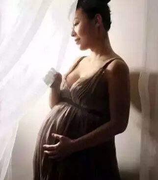

【准妈妈话题】盘点那些不太靠谱“孕妇专用”，准妈记得别被忽悠
市面上各种各样的孕妇专用品琳琅满目，从食品、保健品到洗护用品，甚至包括最新的可穿戴设备，都瞄准了孕妇这个特殊人群，言之凿凿的宣传语让准妈心动不已。很多准妈都觉得价格不是问题，只要是孕妇专用就可以了，主播不禁疑惑，这些所谓的专用品真的都适合孕妇使用吗？真的都有宣传中的作用和效果吗？
如果倒退二三十年，想想那时候的准妈们，是没有什么待产包、漱口水、专用护肤品之类的东西，但是宝宝依然健康，妈妈依旧漂亮。所以孕妇专用品也不是必需的。
只是随着技术进步，产品更新，也就将产品种类逐渐细致化，但同时也会有商家制造一些没必要存在的概念出来，借着市场机遇来炒作产品营销。所谓的孕妇专用产品，有些是有科技含量在其中的，但是大多数也许只是普通成人产品配方或儿童产品配方，然后换个名称而已，本质升级的不算多数，因此准妈不必跟风购买。
举个简单的例子，不靠谱的孕妇专用产品，有些是拿着普通成人产品配方，换了个产品名称而生。有一些再多一点良心的，会用儿童产品配方来制作，听上去好像安全，实际还是要看该厂家配方的实质安全性如何。
细数那些不靠谱的孕妇专用品
1、孕妇测辐射手环
辐射，不知不觉成为了准妈妈们怀孕期间最为关注的问题之一，也成了商家的重点开发领域之一。
各种品牌的防辐射服层出不穷，价格几百元到几千元不等。除了防辐射服，还有商家推出了测辐射手环，让孕妇实时监测周边环境的辐射量，并给予提醒。但这些防辐射、测辐射产品的效果有多大呢？
炒作概念大于实际作用
好多时候这就是一种心理安慰，大家可以问一下专门的质检部门，所谓的防辐射产品有国家标准吗？到目前为止，似乎都没有。
我们平时所处的环境背景里，辐射是否足量到了导致畸形的程度？事实证明，一般家用、日用电器都到不了致畸辐射剂量。所以好多防辐射服、测辐射手环炒作的就是一种概念。有什么作用吗？真没什么作用。
2、孕妇专用碘盐
有关部门曾建议孕妇选用孕妇专用盐，消息一出，准妈们立马蜂拥购买，但国内暂未见孕妇专用碘盐上市。难道准妈补碘非要食用专门的碘盐吗？
适量补碘即可，不要过于刻意
准妈在吃碘上确实跟普通人会有所区别，一般来说，准妈对碘的需求会比普通人多30%到100%，因为小孩在胎儿期和婴幼儿期需要这种元素来发育脑细胞。此外，妊娠期孕妇体内碘的代谢量也会增多，需要补充更多的碘。
准妈要补碘，可不是只有专用碘盐一种途径，在食用普通碘盐的基础上，多食海带、紫菜、蛋、奶等含碘量相对稍高的食物，也都会起到明显的补碘作用，不要因为过度紧张盲目购买。
3、孕妇智能腰带
某款孕妇智能腰带宣传称可以测量腹部肌肉的收缩频率（EMG），同时采取一种非侵入性的方法来监测胎儿心脏状况与心电图（FECG）。目的是降低早产儿的发生概率，当感应垫检测到胎儿的异常心脏速率或子宫收缩率的异常时，它会震动并触发报警。与此同时，智能手机上的App将警告孕妇和她的家人，他们可以立即联系医生寻求帮助。这是真的吗？
孕妇智能腰带走入市场还有点早
其实，胎心异常很好理解，但宫缩异常需要一个指标，包括持续时间、频率、压力强度。在临床上，目前测的都是宫缩压力，而不是EMG，EMG在产科检测中的意义还没有普及，还没有被完全公认。只有孕妈咪有主诉时，比如感觉到了宫缩，我们才会测子宫肌电信号（EMG）。
孕妇智能腰带这种可穿戴医疗设备，还不能把它完全否定掉，但还是应该有一个相应的临床研究，比如孕妇一天宫缩多少次风险会高，否则可能会造成孕妇的恐慌。但从目前学术会议和现有的知识来看，这方面的研究恐怕还不多，因此目前走入市场还有点早。
4、叶酸鸡蛋
据宣传，叶酸蛋的核心生产技术，是在普通的蛋鸡饲料里添加秘制的叶酸预混合饲料，所产下的功能性叶酸鸡蛋1枚中含有70毫微克叶酸，叶酸蛋中含有的叶酸量大约是普通鸡蛋的3倍，是一种“新型”的鸡蛋。吃下一颗叶酸鸡蛋，可以补充鸡蛋+叶酸的两份营养和一份便利了。
“天价”鸡蛋不值天价
吃叶酸片补充叶酸量并不是什么问题，为啥非要花高价买叶酸鸡蛋？况且叶酸鸡蛋是否达到宣传的内容，还需要经过国家相关部门的检测。
按照世界卫生组织定的标准，准备怀孕前三个月和早孕前三个月，每天0.4毫克就足够。除了吃叶酸片，平时我们吃的食物里也都或多或少的含有叶酸，完全不必要铤而走险吃什么叶酸鸡蛋。
另外市面上各种孕妇专用蛋：鱼油鸡蛋、DHA鸡蛋、补血鸡蛋……同样都是高价蛋，但也是同样的问题：是否有这样的效果？
5、孕妇奶粉
现在越来越多的孕妇选择喝孕妇奶粉。孕妇奶粉是低乳糖孕妇配方奶粉，富含叶酸、唾液酸SA、亚麻酸、亚油酸、铁质、锌质、钙质和维生素B12等营养素，对计划怀孕和哺乳期妇女同样实用。

如果平常饮食均衡，按孕期标准来吃，孕妇奶粉就不是必需品。
如果饮食营养不均衡，可以考虑喝孕妇奶粉
不少职场女性长期在外就餐，通过常规饮食很难做好孕前营养储备。那么用强化了DHA、矿物质、维生素等营养素的孕妇奶粉，还是比较适合补充营养的。
孕早期：营养需求少不一定非喝孕妇奶粉
事实上，孕早期胚胎较小，生长比较缓慢，准妈所需热能和营养素基本上与孕前相同。所以没必要特别补充营养，营养过剩也是不好的。
中晚期：牛奶换成孕妇奶粉，保障充足营养
随着恶心、呕吐等不适慢慢减退、消失，准妈的胃口越来越好，腹中宝宝所需的营养也越来越多了。难以获得满足胎儿生长及自身健康的诸多营养素的准妈，把孕期所需的牛奶换成孕妇奶粉，来弥补营养不足。
6、防止和去除妊娠纹霜
有的准妈妈为了不让肚皮上长出难看的蜈蚣纹，天天抹不同品种的去妊娠纹霜，以确保不长“蜈蚣纹”。但也有妈妈发现，即便抹了价格昂贵的去妊娠纹产品，肚皮上仍然会长出很多蜈蚣纹。
可以使用的前提是无害。
其实，皮下弹力纤维和胶原纤维弹性好就不会形成妊娠纹，弹性差的人就会出现，因人而异。这些去妊娠纹霜也没啥坏处，可以试一试，前提是要无害，但后天能否补救回来，还不是特别有定论，就像宣传美白嫩肤产品一样，真正能美白的有几个？
孕产妇之所以会出现妊娠纹，是因为体重快速生长后导致皮肤拉伸断裂所致的，所以面对妊娠纹，孕妈咪注意控制孕期体重是首要做的。
7、孕妇专用牙刷
孕妇牙刷，是孕妇产后坐月子期间为了解决口腔清洁问题而使用的牙刷，具有超柔护齿和一次性的特点，能解决月子期间刷牙不方便和护齿的需要。这样的牙刷真的需要吗？
只要刷牙的方法正确，没必要买
要知道令不少准妈纠结的孕妇专用牙刷，功能用途与普通牙刷无甚区别，材质、做工更精致些，但价格可翻几倍甚至几十倍。实际上，准妈选用牙刷时，只要选择牙刷头小一些，刷毛细软一些的普通牙刷即可，加上正确的刷牙方法和足够的时间，就能很好地清洁口腔，没必要买几十元一支的孕妇专用牙刷。
其实这些孕妇专用的物品还有很多，特别是最近十分火热的孕妇洗护用品，只是有没有必要购买，在不损害身体的情况下，可以尝试！当然，土豪们请随意。孕妇专用食品就得谨慎购买了，不要因为过度的紧张而伤害自己身体和胎儿。主播曾经购买过“天价”鱼油鸡蛋，煮熟后居然有股橘子的味道，果断抛弃，别说孕妇。连大人都不敢吃了……各位准妈掂量掂量吧，均衡饮食按时孕检才是王道啊！